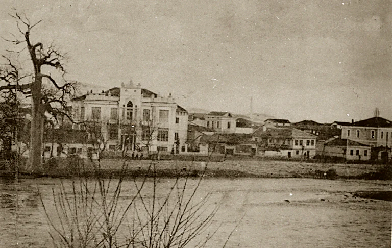
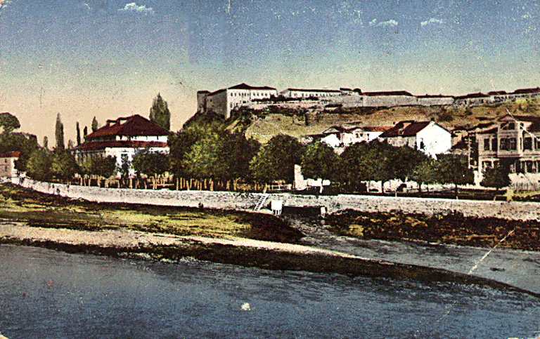
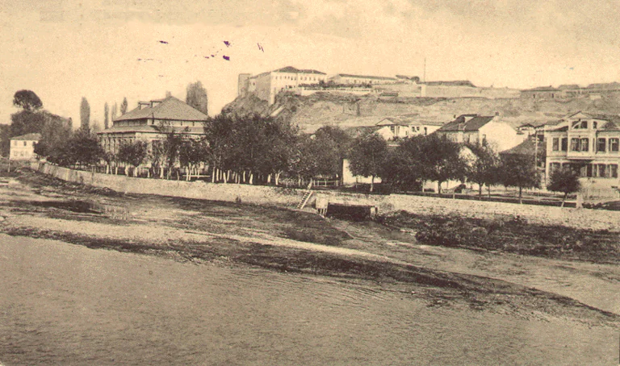
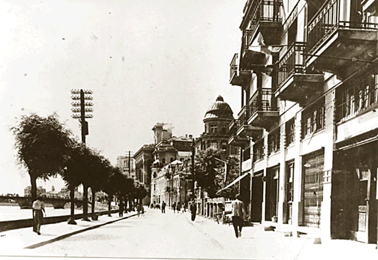
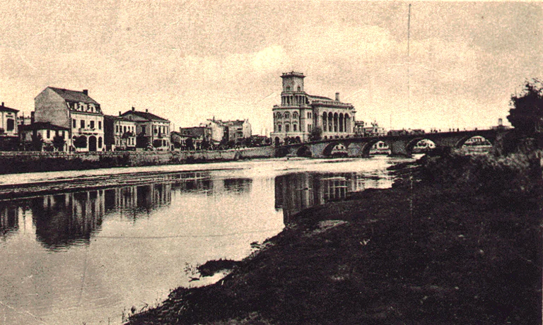
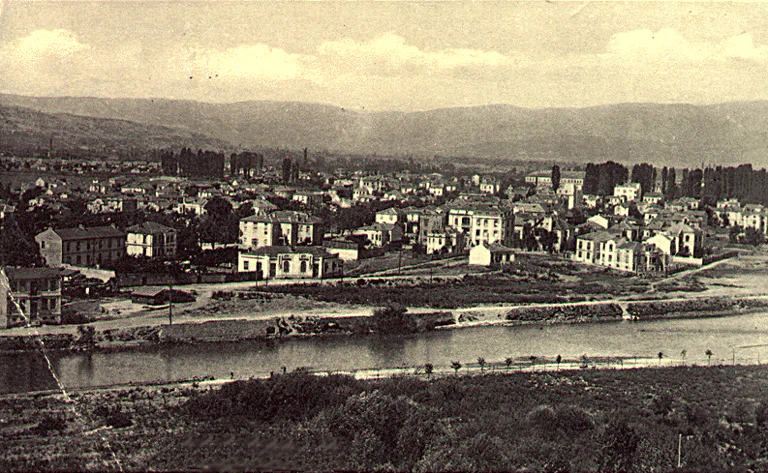
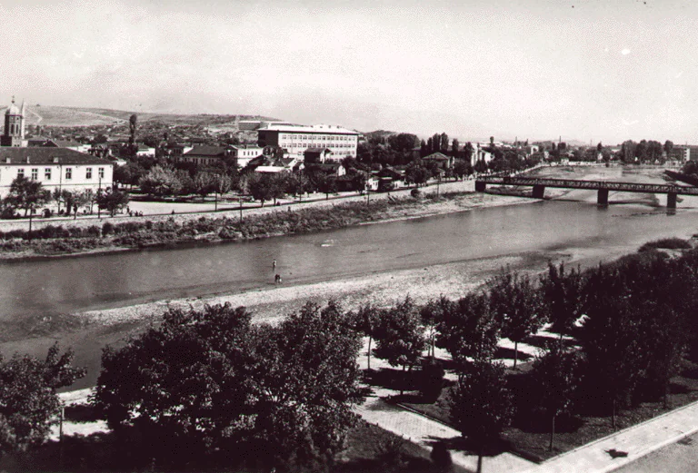
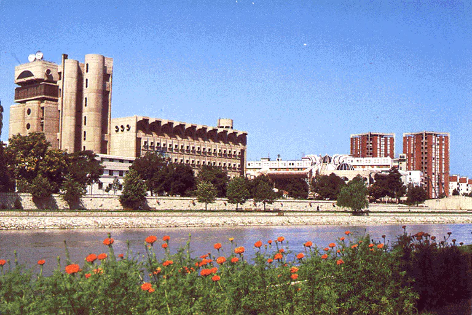

Na reki Vardar
- Scenarij
- Dimitrie Osmanli, Simon Drakul
- Kamera
- Kiro Bilbilovski
- Leto
- 1964
- Trajanje
- 00:16

Nabrežje „13. november“ - 1888.

Mlin na zgornjem toku Vardarja - konec 19. stoletja.

Čeprav je ta razglednica močno poškodovana, je bila vključena v zbirko, saj izvira s konca 19. in začetka 20. stoletja, na njej pa so vidne nekatere stavbe, ki jih ni na nobeni drugi razglednici. Desno je Otomanska banka. V ospredju je stara platana, na kateri je bilo leta 1689 obešeno Karpoševo truplo. Nad njo se dviga skopska trdnjava - Kale. Skrajno levo se vidi del Kamnitega mostu.

Pogled na obe nabrežji Vardarja - začetek 20. stoletja.

Skopje leta 1902 - pogled s Kamnitega mostu proti lesenemu mostu. Vardar ima že zgrajene zidove nabrežja. Vidijo se stanovanjske in javne stavbe. Desno na fotografiji je turško gledališče, levo, čisto na začetku, pa Burmali mošeja. V ozadju sta stavba banke in stara pošta.

Pogled proti lesenemu mostičku, staremu turškemu gledališču in delu skopske trdnjave - Kale. (začetek 20. stoletja)

Pogled z desnega brega Vardarja proti skopski trdnjavi - Kale. (začetek 20. stoletja).

Pogled na levi breg Vardarja (nabrežje „Dimitar Vlahov“) - začetek 20. stoletja. V zidu nabrežja se vidi izliv reke Serave.

Leseni most pred gradnjo železnega mostu. V ozadju sta Kamniti most in Burmali mošeja. (konec 19. stoletja)

Začetek 20. stoletja. Otomanska banka, Skopska metropolija in stavbe na levem bregu Vardarja, tik za Kamnitim mostom. V ospredju je stara platana.

Pogled na levi breg Vardarja proti cerkvi Sv. Mine (z dvema kupolama) in cerkvi Sv. Bogorodice (v ozadju z eno kupolo). - začetek 20. stoletja.

V ospredju sta sodna stavba in stara šola, v ozadju se vidijo kupole cerkve Sv. Mine - začetek 20. stoletja.

Pogled na obe nabrežji Vardarja - začetek 20. stoletja.

Levi breg Vardarja - nabrežje „Dimitar Vlahov“ z Otomansko banko, Metropolijo in dvema kupolama cerkve Sv. Mine v ozadju. (začetek 20. stoletja)

Levi breg Vardarja - nabrežje „Dimitar Vlahov“, med Kamnitim in Železnim mostom, s stanovanjskimi stavbami. (začetek 20. stoletja)

Fotografija je posneta s Kamnitega mostu okoli leta 1910. Levo se vidi staro turško gledališče, nad njim pa skopska trdnjava - Kale.

Levi breg Vardarja z judovsko četrtjo, v ozadju skopska trdnjava - Kale. (1910)

Fotografija je posneta s Kamnitega mostu okoli leta 1910. Levo se vidi staro turško gledališče, nad njim pa skopska trdnjava - Kale.

Skopje med poplavo leta 1916. Voda je segla do stavb. Desno se vidi, kako se je del stavbe zaradi poplave porušil.

Skopje po letu 1918. Obe nabrežji Vardarja kot vzdolžni prometnici, pomembni za razvoj mesta. V ozadju se vidi Kamniti most z Burmali mošejo. Vidi se živahna gradnja številnih stavb na nabrežju z različnimi arhitekturnimi oblikami, blizu evropski šoli.

Skopje pred balkansko vojno. Nabrežje na desni strani Vardarja. V ozadju se vidita Burmali mošeja in Kamniti most. V ospredju sta rusko konzulat in druge stavbe. Arhitektura je pod vplivom evropske arhitekturne šole, z elementi klasičnega, akademskega in psevdoklasičnega oblikovanja.

Pogled na desni breg Vardarja s stavbama banke in stare pošte med Kamnitim mostom in lesenim mostičkom - začetek 1920-ih let.

Pogled proti levemu bregu Vardarja. V ospredju sta sodna stavba in stara šola, v ozadju se vidijo kupole cerkve Sv. Mine. Desno od nje je cerkev Sv. Bogorodice. - 1920-a leta.

Pogled na desni breg Vardarja s stavbama banke in stare pošte med Kamnitim mostom in lesenim mostičkom - začetek 1920-ih let.

Desni breg Vardarja pred Kamnitim mostom. Levo se vidita stavba banke in stara pošta. Desno na razglednici se vidi leseni mostiček - okoli 1920.

Pogled na desni breg Vardarja s stavbama banke in stare pošte med Kamnitim mostom in lesenim mostičkom - začetek 1920-ih let.

Del levega brega Vardarja - približno mesto današnje stavbe Makedonske radiotelevizije. Vidi se minaret Vardar teke mošeje (zgrajene na začetku 16. stoletja) - začetek 1920-ih let.

Del levega brega Vardarja - približno mesto današnje stavbe Makedonske radiotelevizije. Vidi se minaret Vardar teke mošeje (zgrajene na začetku 16. stoletja) - začetek 1920-ih let.

Pogled na desni breg Vardarja pred Kamnitim mostom. Srednji del nabrežja. Levo se vidita stavbi banke in stare pošte. Desno na razglednici se vidi leseni mostiček - okoli 1920.

Skopje - del trga. Levo se vidi del Kamnitega mostu, desno pa prostor pred gradnjo Narodne banke. Nabrežje je urejeno kot prometna ulica. V ozadju desno se vidi moška gimnazija.

Skopje - del trga. Levo se vidi del Kamnitega mostu, desno pa prostor pred gradnjo Narodne banke. Nabrežje je urejeno kot prometna ulica. V ozadju desno se vidi moška gimnazija. - 1930-a leta

Nabrežje „Dimitar Vlahov“ - levi breg Vardarja. - začetek 1920-ih let
Pogled s Kamnitega mostu proti spomeniku padlim borcem in Otomanski banki. - 1920-a leta.

Panoramska slika Skopja, oziroma levega nabrežja Vardarja z delom judovske četrti, četrti Pajko in Kamnitim mostom. - 1920-a leta

Pogled na Skopje z Oficirskega doma proti judovski četrti. - 1920-a leta.

Pogled na desni breg Vardarja s stanovanjskimi stavbami. V ozadju se vidita Kamniti most in gradnja Oficirskega doma. (okoli 1925)

Skopje, 1930-a leta. Pogled na obe nabrežji. V ospredju sta stara šola in sodna stavba, tik za njima pa se vidita zvonika cerkve Sv. Mine. V ozadju se vidi Oficirski dom pred gradnjo Narodne banke. Fotografija je posneta z Železnega mostu.

Nabrežje na desnem bregu Vardarja pred Kamnitim mostom. V ospredju je stanovanjska stavba s trgovinami v pritličju in vhodi v pasažo „Aroesti“, zgrajeno v 1920-ih letih, ki je bila majhen trgovski center z obrtnimi in trgovskimi lokali. (V katastrofalnem potresu leta 1963 je tu umrlo veliko ljudi.) V ozadju se vidijo Kmetijska banka, Oficirski dom, Narodna banka in Kamniti most. (1930-a leta)

Nabrežje „13. november“ s stanovanjskimi stavbami, delom Kamnitega mostu in Oficirskim domom - 1920-a leta.

Pogled proti nabrežju „13. november“ na desni strani Vardarja, Kamnitemu mostu in Oficirskemu domu - posneto okoli 1927.

Del trga pred Kamnitim mostom in oba bregova Vardarja. Levo v ozadju se vidita cerkev Sv. Mine z dvema kupolama in malo bolj levo cerkev Sv. Bogorodice. Nabrežje je urejeno, z električno razsvetljavo in zelenjem. (1925-1930)

Desni breg Vardarja, od lesenega mostička proti parku - 1930-a leta.

Nabrežje „13. november“. Pogled proti Kamnitemu mostu in Oficirskemu domu - konec 1930-ih let.

Nabrežje na levi strani Vardarja pred Kamnitim mostom s stanovanjskimi stavbami judovske četrti. V ozadju se vidi Otomanska banka - okoli 1930.

Pogled s Kamnitega mostu na Vardarju proti lesenemu mostičku in obema bregovoma reke. Desno je Narodno gledališče, levo stavba banke in stara pošta. - 1930-a leta

Pogled na naselje „Bunjakovec“. Strugo Vardarja varujejo zemeljski nasipi. - 1930-a leta

Levi in desni breg Vardarja. Posneto s Kamnitega mostu. Srednji del nabrežja na obeh straneh Vardarja. - okoli 1930

Desni breg Vardarja. Nabrežje „13. november“. - okoli 1930

Skopje, 1930-a leta. Pogled na obe nabrežji. Pogled z Železnega mostu na Vardarju na obe nabrežji, pozidani s stanovanjskimi in javnimi stavbami. V ospredju desno so stara šola, sodna stavba in zvonika cerkve Sv. Mine. V ozadju sta Oficirski dom in Narodna banka.

Pogled proti nabrežju „13. november“ na desni strani Vardarja, Kamnitemu mostu in Oficirskemu domu - posneto okoli 1930.

Pogled na obe nabrežji Vardarja in železni most. - 1950-a leta

Pogled na obe nabrežji Vardarja in betonski most. - 1950-a leta.

Desni breg Vardarja za kamnitim mostom, posnet pred katastrofalnim potresom 26. julija 1963. V ozadju se vidita Oficirski dom in Narodna banka.

Nabrežje na desni strani Vardarja. Poslovno-stanovanjski kompleks ali „Stolpi ob Vardarju“ (projektant arh. Aleksandar Serafimovski). Fotografija je nastala v 1960-ih letih, pred katastrofalnim potresom 26. julija 1963.

Desni breg Vardarja s Kamnitim mostom, stolpi ob Vardarju in Grand hotelom „Skopje“, posnet tik po katastrofalnem potresu 26. julija 1963 in pred regulacijo Vardarja. Regulacija je bila izvedena v letih 1965-1968.

Pogled proti desnemu bregu Vardarja. Lok v ospredju je del kamnitega mostu, posneto v 1950-ih letih.

Pogled z levega brega Vardarja proti Kamnitemu mostu. V ozadju se vidijo Stolpi ob Vardarju. - 1970-a leta

Pogled na današnjo glavno pošto - Telekomunikacijski center (zgrajen 1974-1980, projektant Janko Konstantinov) in nabrežje pred njo.

 Akvadukt4 razglednice
Akvadukt4 razglednice Kale30 razglednic
Kale30 razglednic Mostovi60 razglednic
Mostovi60 razglednic Nabrežje58 razglednic
Nabrežje58 razglednic Trg46 razglednic
Trg46 razglednic Stavbe66 razglednic
Stavbe66 razglednic Krščanski templji19 razglednic
Krščanski templji19 razglednic Muslimanske stavbe33 razglednic
Muslimanske stavbe33 razglednic Oficirski dom29 razglednic
Oficirski dom29 razglednic Gledališče28 razglednic
Gledališče28 razglednic Železniška postaja13 razglednic
Železniška postaja13 razglednic Šole36 razglednic
Šole36 razglednic Parki12 razglednic
Parki12 razglednic Tržnice18 razglednic
Tržnice18 razglednic Ulice38 razglednic
Ulice38 razglednic Panorama I60 razglednic
Panorama I60 razglednic Panorama II30 razglednic
Panorama II30 razglednic Kolaži55 razglednic
Kolaži55 razglednic Poplave9 razglednic
Poplave9 razglednic Potres27 razglednic
Potres27 razglednic Skopje 200026 razglednic
Skopje 200026 razglednic